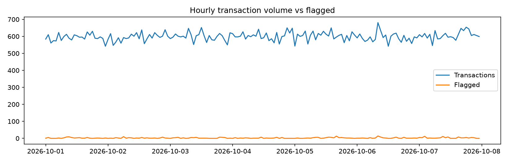
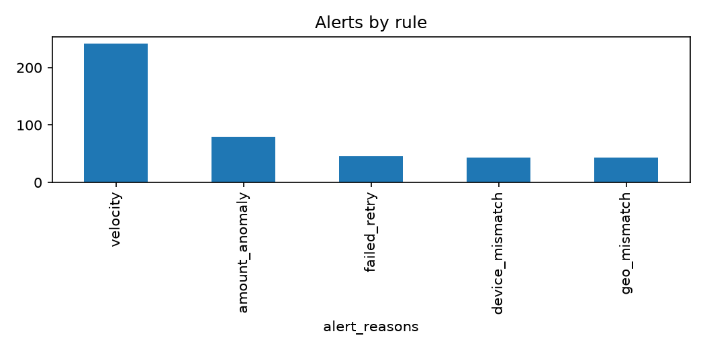
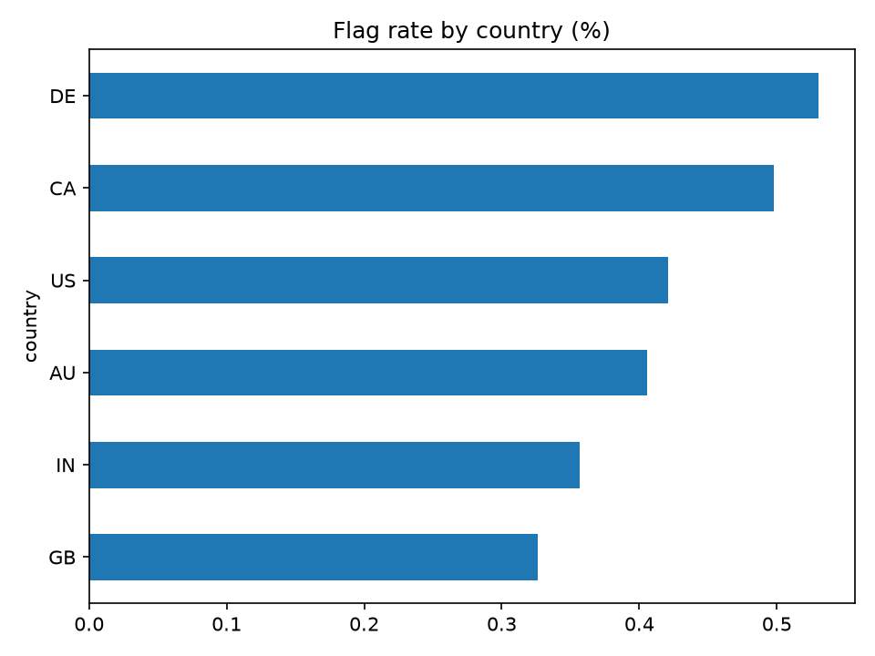

Real-Time E-Commerce Fraud & Transaction Monitoring
Fraud Incidents Detected
219
Transactions Processed
100670
Total Revenue Monitored
4483271.74
Fraud Transactions Truth
670
Medium Risk Transactions
388
Pipeline Runtime Seconds
3.72
Throughput Txn Per Sec
27061.8
Hourly volume

Alerts by rule

Flag rate by country
